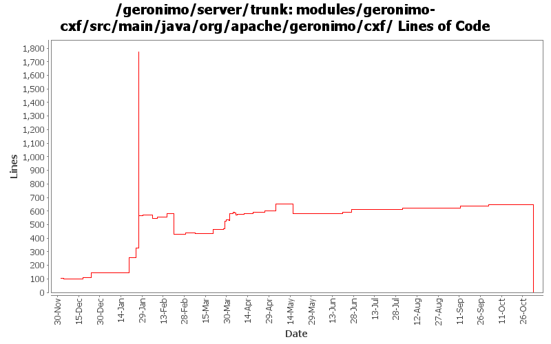

[root]/modules/geronimo-cxf/src/main/java/org/apache/geronimo/cxf
 annotations
(0 files, 0 lines)
annotations
(0 files, 0 lines)
 client
(0 files, 0 lines)
client
(0 files, 0 lines)
 ejb
(0 files, 0 lines)
ejb
(0 files, 0 lines)
 pojo
(0 files, 0 lines)
pojo
(0 files, 0 lines)

| Author | Changes | Lines of Code | Lines per Change |
|---|---|---|---|
| Totals | 114 (100.0%) | 2674 (100.0%) | 23.4 |
| dims | 34 (29.8%) | 1855 (69.4%) | 54.5 |
| gawor | 36 (31.6%) | 485 (18.1%) | 13.4 |
| djencks | 11 (9.6%) | 303 (11.3%) | 27.5 |
| jgenender | 5 (4.4%) | 14 (0.5%) | 2.8 |
| kevan | 9 (7.9%) | 13 (0.5%) | 1.4 |
| jdillon | 1 (0.9%) | 4 (0.1%) | 4.0 |
| prasad | 18 (15.8%) | 0 (0.0%) | 0.0 |
GERONIMO-3565. Modules distributed amongst framework/modules and plugins
0 lines of code changed in 18 files:
better handling of HTTP GET for JAX-WS web services (GERONIMO-3494)
8 lines of code changed in 2 files:
fix the cxf/spring issues by hiding the spring classes and resources from the application classloader and by making cxf to use cxf/car module classloader to load spring resources instead of the application classloader
16 lines of code changed in 1 file:
fixes for GERONIMO-3196
15 lines of code changed in 1 file:
use default SAAJ implementation for CXF. Could be Sun or Axis2 impl.
1 lines of code changed in 1 file:
use SecurityContext class in CXF (simplifies our code)
23 lines of code changed in 1 file:
(re)disable cxf resource injection (the api was recently changed)
8 lines of code changed in 1 file:
fixes for latest cxf snapshot
2 lines of code changed in 1 file:
expose imported wsdl or schema files properly
31 lines of code changed in 2 files:
Fix calls to CXF ServiceWSDLBuilder
1 lines of code changed in 1 file:
much improved jaxws ejb web service support
56 lines of code changed in 1 file:
minor update
1 lines of code changed in 1 file:
fix xml/http binding support
7 lines of code changed in 2 files:
this is confusing but this id allows for proper wsdl soap bindings to be generated
2 lines of code changed in 1 file:
delay setting of the response code
10 lines of code changed in 1 file:
workaround for jetty character encoding problems
14 lines of code changed in 1 file:
check for null
1 lines of code changed in 1 file:
Updated code due to CXF new SNAPS
5 lines of code changed in 2 files:
preventive measure (so that code still works when latest cxf snapshot is published)
4 lines of code changed in 1 file:
this hack is no loger necessary
0 lines of code changed in 1 file:
make spring-based bus as the default, and make clients work again (after cxf update)
7 lines of code changed in 3 files:
fix compliation problem after a new snapshot
3 lines of code changed in 1 file:
workaround for cxf problems and call destroy() on web container on shutdown/uninstall
12 lines of code changed in 1 file:
if wsdl file is supplied and it has multiple services or ports make sure ?wsdl returns only one service and one port
71 lines of code changed in 1 file:
compile with latest snapshot
0 lines of code changed in 1 file:
minor change
1 lines of code changed in 1 file:
set content-type take two
57 lines of code changed in 1 file:
return charset with content-type
95 lines of code changed in 1 file:
use right class to lookup wsdl (as a resource)
5 lines of code changed in 1 file:
enforce WebServicePermission when publishing an endpoint (this will work once cxf publishes latest snapshot)
0 lines of code changed in 1 file:
basic saaj 1.3 integration
30 lines of code changed in 1 file:
property resolve wsdlLocation attribute of WebService annotation
4 lines of code changed in 1 file:
enable oasis catalog resolution for wsdl and xsd for cxf
0 lines of code changed in 1 file:
re-enable cxf. lots of thanks to cxf folks
1 lines of code changed in 1 file:
GERONIMO-2882 patch committed
8 lines of code changed in 2 files:
GERONIMO-2849 - service-ref app client test
GERONIMO-2850 - CXF: initial web service support for EJBs
42 lines of code changed in 2 files:
Commit patch from Jarek to cope with CXF change
4 lines of code changed in 1 file:
Fix for GERONIMO-2825 - CXF and spring version update
Fix for GERONIMO-2826 - Test case to test invocations using service-ref
Fix for GERONIMO-2830 - Updated dependencies for ejb-based tests
Fix for GERONIMO-2836 - Improvements for CXF integration
Fix for GERONIMO-2840 - Minor fixes
48 lines of code changed in 4 files:
Fix for GERONIMO-2807 - CXF: initial service-ref support
9 lines of code changed in 1 file:
Fix for GERONIMO-2796 - HandlerResolver for CXF web servies & other improvements
28 lines of code changed in 4 files:
(15 more)